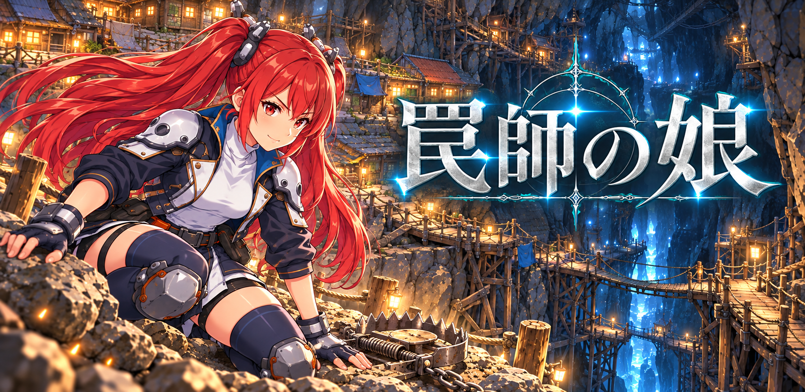

罠師の娘 攻略ガイド
罠師の娘 は、攻撃できない主人公が罠で敵を倒して地下を進む、ターン制ローグライクです。このサイトの数値はゲームのデータから直接生成しています。
おすすめアプリ
 証録 ‐ 常時証拠録音アプリスマホを閉じていても設定時刻に自動で録音。バックグラウンドで証拠を残す録音アプリ。
証録 ‐ 常時証拠録音アプリスマホを閉じていても設定時刻に自動で録音。バックグラウンドで証拠を残す録音アプリ。 2.5Dバトルシミュレーター編成・スキル・ダメージ検証ができる非公式2.5Dバトルシミュレーター。
2.5Dバトルシミュレーター編成・スキル・ダメージ検証ができる非公式2.5Dバトルシミュレーター。 エネルギー計算手帳電気・熱・流体の計算式をいつでも手軽に。エンジニア必携の計算手帳アプリ。
エネルギー計算手帳電気・熱・流体の計算式をいつでも手軽に。エンジニア必携の計算手帳アプリ。 空気線図プロッター Psychrometric Chart温度と相対湿度・露点温度から空気線図上に状態をプロットできる無料アプリ。
空気線図プロッター Psychrometric Chart温度と相対湿度・露点温度から空気線図上に状態をプロットできる無料アプリ。 しゃべるアラームスケジューラー条件分岐を含むオリジナルのスケジュール組み立て型しゃべるアラームアプリ。
しゃべるアラームスケジューラー条件分岐を含むオリジナルのスケジュール組み立て型しゃべるアラームアプリ。 おばけドッキリおばけになって住民を驚かせよう！シンプル操作で子供でも楽しめるカジュアルゲーム。
おばけドッキリおばけになって住民を驚かせよう！シンプル操作で子供でも楽しめるカジュアルゲーム。 推理・謎解きゲーム｜ファブル最強生成AIが考えた高難易度の脱出ゲーム風謎解きアプリ。
推理・謎解きゲーム｜ファブル最強生成AIが考えた高難易度の脱出ゲーム風謎解きアプリ。 照度分布実測アプリスマホカメラで室内の照度を測定し、ヒートマップで光の分布を可視化。
照度分布実測アプリスマホカメラで室内の照度を測定し、ヒートマップで光の分布を可視化。 目覚ましライトアラーム時刻になったらカメラのフラッシュが点灯するだけのシンプルな目覚まし。
目覚ましライトアラーム時刻になったらカメラのフラッシュが点灯するだけのシンプルな目覚まし。 フェイスウォールカメラを使ってリアルタイムに顔の表情・頭の動き・手のサイン・声の大きさを認識するカジュアルゲームです。
フェイスウォールカメラを使ってリアルタイムに顔の表情・頭の動き・手のサイン・声の大きさを認識するカジュアルゲームです。 回転パズルナンプレ数字を「書き込む」のではなく「回転」させる、まったく新しいナンプレ
回転パズルナンプレ数字を「書き込む」のではなく「回転」させる、まったく新しいナンプレ Air Blow Simulator（エアブローシミュレーター）配管設計から流量・圧力損失・衝撃圧力まで計算できるエアブロー配管のエンジニアリングシミュレーター。
Air Blow Simulator（エアブローシミュレーター）配管設計から流量・圧力損失・衝撃圧力まで計算できるエアブロー配管のエンジニアリングシミュレーター。 タイムラプス成長記録撮影カメラ同じアングルで撮り続けて「変化の過程」を記録・可視化するタイムラプス撮影カメラアプリ。
タイムラプス成長記録撮影カメラ同じアングルで撮り続けて「変化の過程」を記録・可視化するタイムラプス撮影カメラアプリ。 ポンプ配管シミュレーター配管ルートから全揚程・圧力損失・NPSH・消費電力を一括計算する水力計算シミュレーター。
ポンプ配管シミュレーター配管ルートから全揚程・圧力損失・NPSH・消費電力を一括計算する水力計算シミュレーター。 お片付けできたね親に代わって「片付け」をアラームが伝えてくれる。AIが写真で判定し、できたらキャラが育つ！親子で使える習慣化アプリ。
お片付けできたね親に代わって「片付け」をアラームが伝えてくれる。AIが写真で判定し、できたらキャラが育つ！親子で使える習慣化アプリ。 グラフスキャン写真の棒グラフ・折れ線グラフを数値表に変換。CSV出力にも対応。
グラフスキャン写真の棒グラフ・折れ線グラフを数値表に変換。CSV出力にも対応。 ネコパンチ猫じゃらしでネコの狩猟本能を刺激し、飛びかかる直前をすんでのところでかわす反射神経ゲーム。
ネコパンチ猫じゃらしでネコの狩猟本能を刺激し、飛びかかる直前をすんでのところでかわす反射神経ゲーム。カードを横にスワイプして、ほかのアプリもご覧いただけます
コンテンツ
初心者向け
- 毎日やること毎日やると得をすること。開放される階層ごとに整理。
- 階層別に開放される機能何階をクリアすると何が使えるようになるか。
- 最初の30階の進め方B1〜B30 をスムーズに進めるコツ。